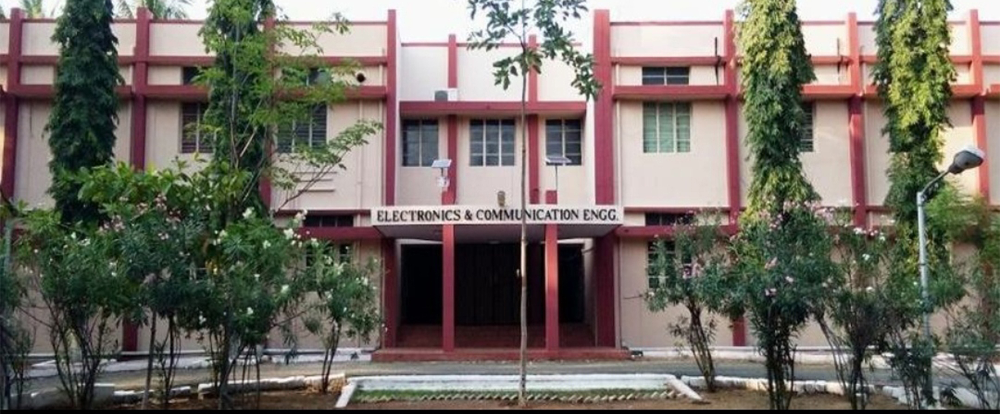
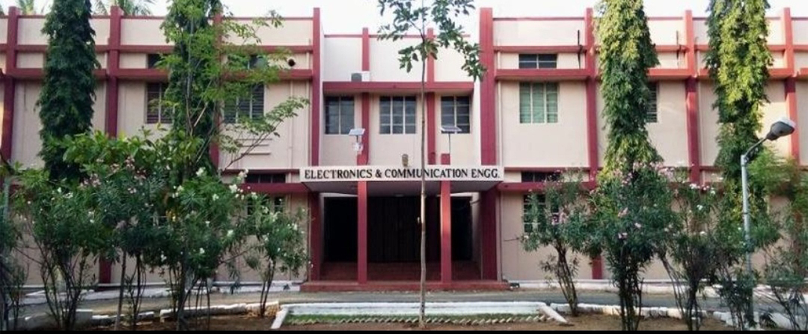

August 16, vedathaangala neriya paravaikal vara maari nagalam veveru eduthula irunthu GCE-Salem gra saranaalayathuku vanthom, pala dreams, pain elathaiyum sumanthutu inga vanthom, pudu face, surroundings,hostel, rules, mess food and senior relationship ellam pudusuu, 1st kastama irunthuchu ana ipo athu ilama kastama iruku, 1st konja naal(21-days) induction programme, orutharuku oruthar intro aanom, set aaga try panom, feelings apart, new friends oda College Life ah enjoy panna aramichom, nalla advisor, attendance problem ila, assignment pooda naalu per avangala pathu eluthi avangaluku munadi submit panirom, series test,semester, arrearsnu evlo "vanthalam vidu macha pathukalam" avalavthan..........
Neriya sanda, misunderstanding nu vanthalum department nu vantha vera level tha🔥🔥🔥. English lab patta padu irukaee aiooo aprm workshop welding-raja sir and incharge-Ram sir kita vangana thitu- famous dialogue" ivanga tha en pasanga 😂😂" epadyo oru sem mudichom. Aprm next sem ponam starting girls ku new year celebration aprm girls ku freshers day vachanga, apovae senior frd pidichitanga, girls pana atakasam hosteluku tha therium aaavona ethathu function nu solluvanga, intha pakkam department la marupadiyum athae staff konjam lab pudusa jollyah irunthuchu physics la tha bayagaram strict ah irunthalum etho kathukita feel irukum, chemistry learn with fun tha... EEE lab aioo epadyo mudichom ana ethuku mela tha EG ithuku kasta pata mari final year project ku kuda pada matom nu ninaikaran epady potalum thappuu...
Seri kathukalam nu patha election vachi 40 nall leave ithula irunthalaum maranthuruchu athaiyum oru vali ah complete panni department kula kaaladi eduthu vachom.
11/07/2019 department kula entry advisor Jayanthi mam, ithana naala nanga senior solli keta staff lam engalauku vantanga. Bayathoda aramichom 1st day sprrrr hostel change panna ponam tension absence nuu apadyae porumaiya tha pochu seminar hour, apadiye lateral um vantanga, transfer students, elarum mingle anom, evan Kannu vachanu therla junior oda intract anathuku suspension panitanga for 10days, first two days enna panrathune thrla senior roomla than thoongunom and basketball ground sapadu illa romba kasta pattom vangatha thitu ila, department kula vidala aprm enaa veetuku poitom parents oda 15 th day vanthom edho ulla vitanga pona attendance ila......
Department ku ulla pona adutha varama comnet senjitom nanga overall adichom adutha nalae hod kita permission ketu Iv ponom 01/10/2019 & 02/10/2019 IV one of the valuable days in college life yaaralyum maraka mudiyathu.
IV ku prepare panrom nu sollitu one week sema alaichal IV co-ordinators sirapa sambavam senchanga.IV ku incharge staffs @Dinakaran and @Deepthi. IV ku oru bus pudichom nanga paatha bus vera aana vantha bus uh vera aprom IV ku kelambupothu seniors sent off pannunanga sema adi adichanga athulayum Dinessh ku adi patturuchu avan bus la avloka enjoy pannala aprom nanga ellarum nalla enjoy pannanunom athulayum Tamil & Ismail oru sambavam senchutanga ou valiya ooty ku ponom poi partha resort rooms ellame vera vera place irunthuchu athuku aprom two days ALL INDIA RADIO and RADIO ASTRONOMY CENTRE two companies visit pannunom aprom travels owner neraya spot ku kootitu poren nu sollitu aprom time pathala athunala nanga Dodabetta,Boat riding nu neraya place pogave illa aana oru enjoyment ennan na Fire Camp ponom athu sema fun ah irunthuchu athuku aprom shopping poitu second day 6.00 pm ku ooty la irunthu kelambunom elaroda beautiful moments in clg na IV.
Aprm epadyo antha semla semester eluthitu leave kuda avalova ilama Coimbatore la ethoko ponam nu thrla anga pona nanga book pannuna room cancel aayuruchu aprom antha hotel manager help pannunaru.Athe hotel ah deluxe room book panni kodutharu ithukellam karanam yaaruna namma Tamil. Athuku aprom girls ku hostel book panni irunthanga adutha naal IPT -CODE BIND TECHNOLOGIES antha company ku ponom athula oru akka va namma single (a) sanjay pathutan antha akka avan semaya sight adichutu irunthan athuku aprom nanga pasanga ellarum coimbatore la irunthu kelambi night salem vanthom..
26/01/2020 Yercaud ponom athe time kavin puthu phone vangunan puthu phone ooda yercaud ponom bike illathathu nala bus la tha ponom bus travelling koncham bore adichuthu aana intha trip la days scholars aala vara mudila due to many commitments athuku aprom yercaud poi reach aana vudane oru falls ku nadanthu ponom, pogum pothu easy ah poitom anga poi nanga view point lam poi paathom aprom falls ku poi kulichom athuku aprom srini antha falls mela poi eruna srini atha paathu mugunth ponan athuku aprom pradeep um ponan appadiye tamil um vanthan anga sema enjoyment nanga romba height la poi yeritom athuku aprom erangum pothu mugunthan summa illama pradeep kita "oru step slip aanalum nee gaali da" apdinu sonnan vudane pradeep ku allu vituruchu athuku aprom eppadiyo kela varumpothu oru plant ah paathom athu Ginger plant nu nenachu oru 6kg eduthutu vanthom athuku aprom paatha athu etho oru kelangu type aprom appadiye bus eri salem vanthutom...
Yercaud trp mudinchu one month kalichu KOLLI HILLS ponom sanjay ooda asasaiya fulfill pannitom aana intha time nanga bike la ponom rendu bike bajaj & pulsar ah rent ku eduthom aprom kavin rendu bike,sanjay RE eduthutu vanthan aprom mugunthan friend oda bike 27/2/2020 morning 6.00 maniku kelambunom bike ride sema jollyah irunthuchu aprom kolli hills ku ponom angayum poi oru falls ku ponom anga kulichitu mela eri varathuku romba kastam ah irunthuchu appadiye hotel la saptutu view point ku ponom poitu varumpothu oru small accident wajid ku adi paturuchu aprom paatha ella bike la yum fuel kaamiya irunthuthu aprom eppadiyo amount ready panni fuel potutu varumpothu nadu valila discover puncture aayuruchu melayum poga mudiyathu keela yum poga mudila athuku aprom eppadiyo keela vanthu puncture potutu aprom salem kelambitom salem poitu varum pothu sanjay,kavin veetla bike ah drop pannanum athuku marupadiyum bike ah eduthutu namakkal ponom pradeep,tamil,mugu,sanjay,kavin nanga ellarum poitu drop pannitu bus la salem vanthom......
Sila thinangalil vanthathu corona,paravaikal thangal irupidam senrathu nambikaiyudan meendum saranalayam varuvom endru........ one month lockdown nu sonnanga nanga ellarum pala vagaiana santhosangal sogangal ellathaiyum maranthutu veetuku ponom april 14 varaikum iruntha lockdown april end varaikum extend aachu antha lockdown extend aayite poitu irunthuchu kadaisila antha lockdown 4-months aachu athulayum oru good news enana enga semester cancel panitanga athulayum oru bad news ennana final years ku exam iruku nu sollitanga appadiye romba naal aachu appo appo conference call video call jokes nu nalla poitu irunthuthu nanga elarum romba distance la irunthalum engaloda natpu koraiyave illa ...............